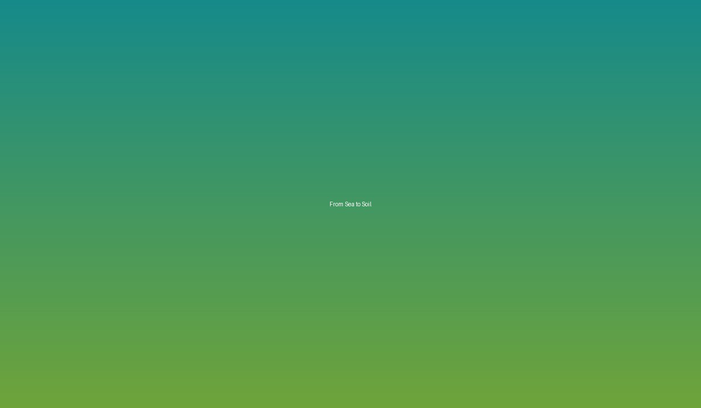

PAGUBA
Projek & Aktiviti
Program dan inisiatif yang menghubungkan komuniti, sumber tempatan dan inovasi.

UTM-PAGUBA
Dari Laut ke Tanah
From Sea to Soil menghubungkan sumber laut dengan manfaat kepada tanah dan komuniti.
- Program Perintis Kampung
- Program Tanaman Sihat
- Program Kebun Rumah
- Projek Perintis Ternakan
- Projek Kolam & Air
- Program Ekonomi Kitaran Komuniti
Ekonomi Kitaran
Mencipta nilai daripada sisa.
Perjalanan daripada sumber tempatan kepada produk bernilai tambah dan peluang komuniti.
Penternakan KupangSisa Kulit KupangPenyelidikan & InovasiProduk Bernilai TambahPeluang Komuniti & Pasaran